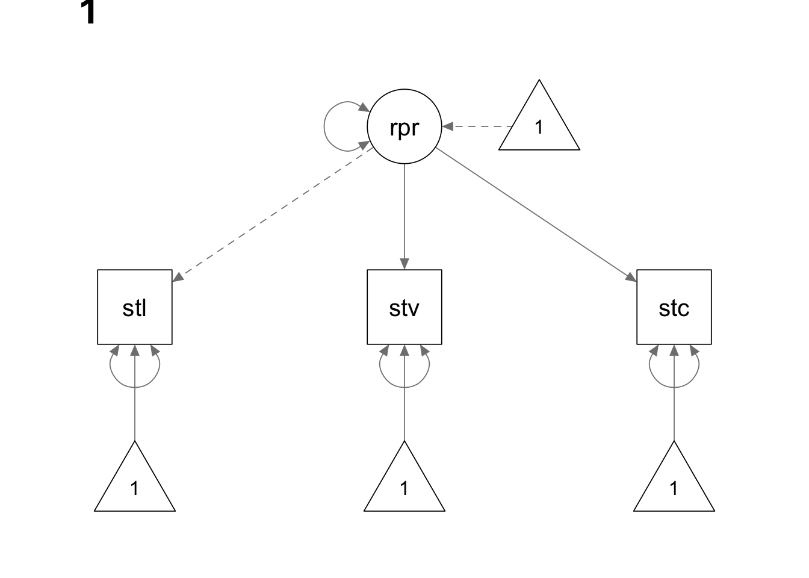
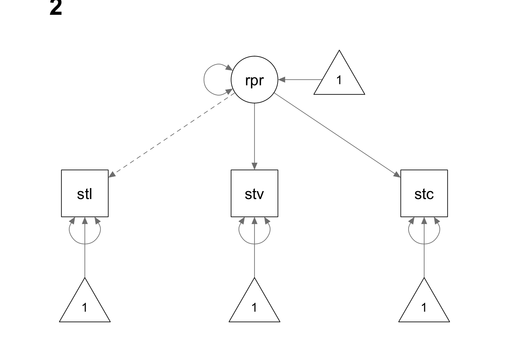
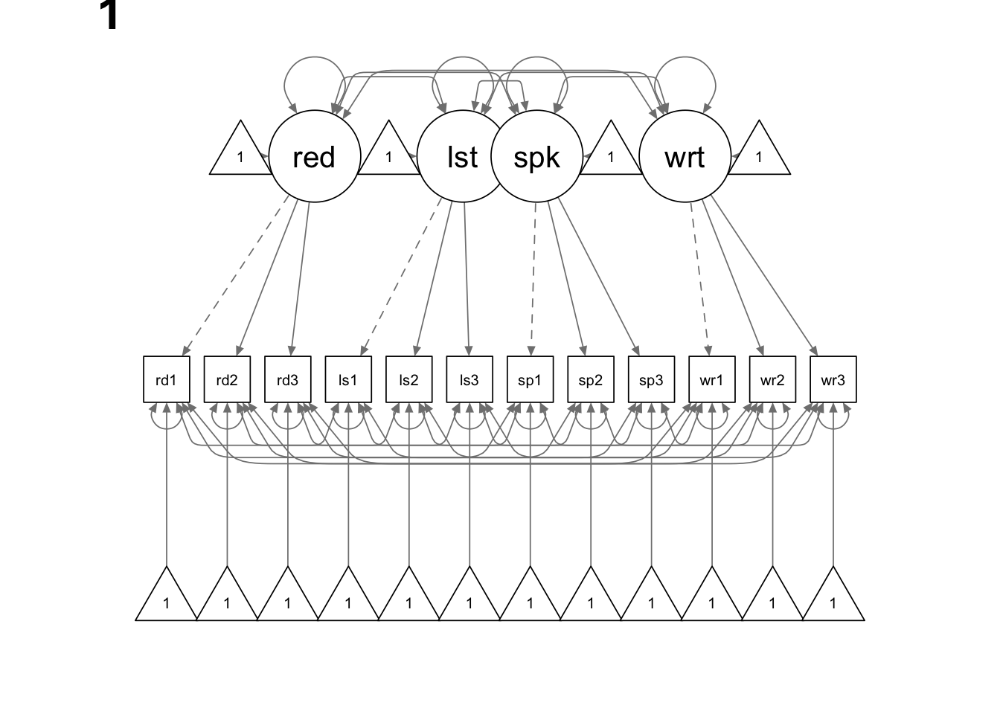
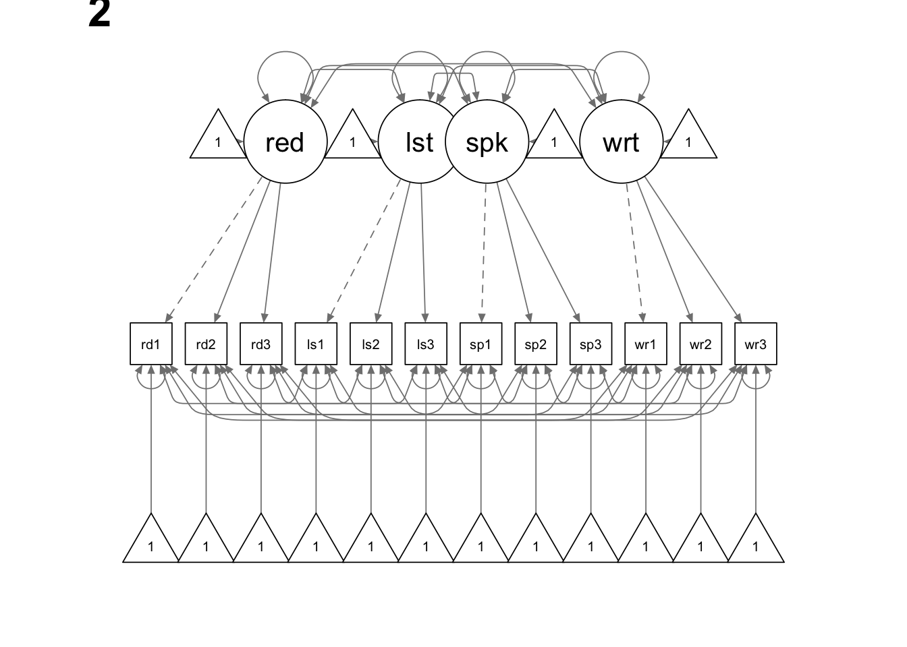

In this tutorial, we are going to use lavaan for
structured means analysis.
library(lavaan)
library(semPlot)The data for this example is saved in two txt files named “means_data_girls.txt” and “means_data_boys.txt”, respectively. We need to combine them into a single data set and create a grouping variable “gender”.
setwd(mypath) # change it to the path of your own data folder
girl <- read.delim("means_data_girls.txt", sep = "\t", header = T)
boy <- read.delim("means_data_boys.txt", sep = "\t", header = T)
colnames(girl) <- c('satvoc', 'satcomp', 'satlang')
colnames(boy) <- colnames(girl)
girl$gender <- 1
boy$gender <- 2
both <- rbind(girl,boy)
both$gender <- ordered(both$gender)
# check the data
str(both)## 'data.frame': 1998 obs. of 4 variables:
## $ satvoc : int 700 710 740 680 710 700 770 660 720 700 ...
## $ satcomp: int 680 690 720 700 670 710 740 660 710 720 ...
## $ satlang: int 640 680 710 650 710 690 710 620 740 680 ...
## $ gender : Ord.factor w/ 2 levels "1"<"2": 1 1 1 1 1 1 1 1 1 1 ...summary(both)## satvoc satcomp satlang gender
## Min. :540 Min. :540.0 Min. :530.0 1:999
## 1st Qu.:670 1st Qu.:660.0 1st Qu.:640.0 2:999
## Median :700 Median :690.0 Median :660.0
## Mean :701 Mean :688.7 Mean :661.8
## 3rd Qu.:730 3rd Qu.:720.0 3rd Qu.:690.0
## Max. :850 Max. :840.0 Max. :780.0Next, we fit a multi-group CFA model to the data.

We use the following model syntax to specify our model. In order to
force the latent variable to have a mean of zero in girls group (gender
= 1) and a freely estimated mean in boys group (gender = 2), we multiply
the intercept by a vector c(0,NA). We also use the
pre-multiplication method to constrain the factor loadings and indicator
intercepts to be equal across groups.
mean.model <- '
rprof =~ 1*satlang + c(a,a)*satvoc + c(b,b)*satcomp
# mean structure
rprof ~ c(0,NA)*1
satlang ~ c(c,c)*1
satvoc ~ c(d,d)*1
satcomp ~ c(e,e)*1
# variances
rprof ~~ rprof
satlang ~~ satlang
satvoc ~~ satvoc
satcomp ~~ satcomp
'
mean.fit <- lavaan(mean.model, both, group = "gender")
summary(mean.fit, fit.measures = T, standardized = T)## lavaan 0.6.15 ended normally after 153 iterations
##
## Estimator ML
## Optimization method NLMINB
## Number of model parameters 19
## Number of equality constraints 5
##
## Number of observations per group:
## 1 999
## 2 999
##
## Model Test User Model:
##
## Test statistic 5.350
## Degrees of freedom 4
## P-value (Chi-square) 0.253
## Test statistic for each group:
## 1 2.194
## 2 3.156
##
## Model Test Baseline Model:
##
## Test statistic 3106.046
## Degrees of freedom 6
## P-value 0.000
##
## User Model versus Baseline Model:
##
## Comparative Fit Index (CFI) 1.000
## Tucker-Lewis Index (TLI) 0.999
##
## Loglikelihood and Information Criteria:
##
## Loglikelihood user model (H0) -29315.178
## Loglikelihood unrestricted model (H1) -29312.502
##
## Akaike (AIC) 58658.355
## Bayesian (BIC) 58736.754
## Sample-size adjusted Bayesian (SABIC) 58692.275
##
## Root Mean Square Error of Approximation:
##
## RMSEA 0.018
## 90 Percent confidence interval - lower 0.000
## 90 Percent confidence interval - upper 0.054
## P-value H_0: RMSEA <= 0.050 0.921
## P-value H_0: RMSEA >= 0.080 0.001
##
## Standardized Root Mean Square Residual:
##
## SRMR 0.012
##
## Parameter Estimates:
##
## Standard errors Standard
## Information Expected
## Information saturated (h1) model Structured
##
##
## Group 1 [1]:
##
## Latent Variables:
## Estimate Std.Err z-value P(>|z|) Std.lv Std.all
## rprof =~
## satlang 1.000 28.243 0.737
## satvoc (a) 1.434 0.038 37.957 0.000 40.512 0.883
## satcomp (b) 1.241 0.033 38.068 0.000 35.059 0.884
##
## Intercepts:
## Estimate Std.Err z-value P(>|z|) Std.lv Std.all
## rprof 0.000 0.000 0.000
## .satlang (c) 668.238 1.099 607.903 0.000 668.238 17.447
## .satvoc (d) 710.061 1.412 502.966 0.000 710.061 15.474
## .satcomp (e) 696.623 1.220 571.073 0.000 696.623 17.561
##
## Variances:
## Estimate Std.Err z-value P(>|z|) Std.lv Std.all
## rprof 797.691 51.486 15.493 0.000 1.000 1.000
## .satlang 669.262 34.934 19.158 0.000 669.262 0.456
## .satvoc 464.487 40.101 11.583 0.000 464.487 0.221
## .satcomp 344.509 29.943 11.505 0.000 344.509 0.219
##
##
## Group 2 [2]:
##
## Latent Variables:
## Estimate Std.Err z-value P(>|z|) Std.lv Std.all
## rprof =~
## satlang 1.000 28.837 0.732
## satvoc (a) 1.434 0.038 37.957 0.000 41.364 0.865
## satcomp (b) 1.241 0.033 38.068 0.000 35.796 0.890
##
## Intercepts:
## Estimate Std.Err z-value P(>|z|) Std.lv Std.all
## rprof -12.753 1.379 -9.252 0.000 -0.442 -0.442
## .satlang (c) 668.238 1.099 607.903 0.000 668.238 16.959
## .satvoc (d) 710.061 1.412 502.966 0.000 710.061 14.845
## .satcomp (e) 696.623 1.220 571.073 0.000 696.623 17.327
##
## Variances:
## Estimate Std.Err z-value P(>|z|) Std.lv Std.all
## rprof 831.589 53.781 15.462 0.000 1.000 1.000
## .satlang 720.993 37.720 19.114 0.000 720.993 0.464
## .satvoc 576.727 45.233 12.750 0.000 576.727 0.252
## .satcomp 335.024 31.463 10.648 0.000 335.024 0.207The data for this example is saved in two txt files named “chinese_means.txt” and “korean_means.txt”, respectively. We need to combine them into a single data set and create a grouping variable “country”.
setwd(mypath) # change it to the path of your own data folder
chinese <- read.delim("chinese_means.txt", sep = "\t", header = F)
korean <- read.delim("korean_means.txt", sep = "\t", header = F)
chinese$country <- 1
korean$country <- 2
both.data <- rbind(chinese, korean)
both.data$country <- ordered(both.data$country)
colnames(both.data) <- c('read1', 'read2', 'read3','list1','list2','list3',
'speak1','speak2','speak3', 'write1','write2','write3','country')
# check the data
str(both.data)## 'data.frame': 182 obs. of 13 variables:
## $ read1 : int 10 11 11 20 21 10 5 4 12 25 ...
## $ read2 : int 10 8 21 17 17 16 11 7 19 26 ...
## $ read3 : int 14 23 1 23 19 14 11 12 16 23 ...
## $ list1 : int 14 5 11 13 13 8 14 10 10 21 ...
## $ list2 : int 17 13 8 19 12 7 21 15 12 16 ...
## $ list3 : int 12 12 4 19 12 6 19 12 12 21 ...
## $ speak1 : int 19 13 18 20 19 15 17 17 15 20 ...
## $ speak2 : int 15 14 17 18 19 15 15 19 18 23 ...
## $ speak3 : int 17 17 15 23 17 15 18 20 13 19 ...
## $ write1 : int 12 12 14 20 20 14 15 11 17 22 ...
## $ write2 : int 17 14 15 17 20 12 17 15 17 22 ...
## $ write3 : int 17 15 15 21 22 15 21 14 20 24 ...
## $ country: Ord.factor w/ 2 levels "1"<"2": 1 1 1 1 1 1 1 1 1 1 ...summary(both.data)## read1 read2 read3 list1
## Min. : 3.00 Min. : 2.00 Min. : 1.00 Min. : 1.00
## 1st Qu.:12.00 1st Qu.:14.00 1st Qu.:16.00 1st Qu.:12.00
## Median :18.00 Median :19.00 Median :20.00 Median :16.00
## Mean :17.76 Mean :18.83 Mean :19.76 Mean :15.92
## 3rd Qu.:23.00 3rd Qu.:24.00 3rd Qu.:25.00 3rd Qu.:20.00
## Max. :30.00 Max. :30.00 Max. :30.00 Max. :30.00
## list2 list3 speak1 speak2
## Min. : 0.00 Min. : 1.00 Min. : 0.00 Min. : 5.00
## 1st Qu.:13.00 1st Qu.:14.00 1st Qu.:15.00 1st Qu.:17.00
## Median :17.00 Median :18.00 Median :18.00 Median :18.00
## Mean :16.82 Mean :18.12 Mean :18.08 Mean :18.64
## 3rd Qu.:21.00 3rd Qu.:22.00 3rd Qu.:20.00 3rd Qu.:21.50
## Max. :30.00 Max. :30.00 Max. :28.00 Max. :29.00
## speak3 write1 write2 write3 country
## Min. : 9.00 Min. : 7.00 Min. : 8.00 Min. : 8.00 1:86
## 1st Qu.:17.00 1st Qu.:15.00 1st Qu.:17.00 1st Qu.:18.00 2:96
## Median :19.00 Median :20.00 Median :21.00 Median :21.00
## Mean :19.17 Mean :18.86 Mean :19.79 Mean :20.51
## 3rd Qu.:22.00 3rd Qu.:22.00 3rd Qu.:22.00 3rd Qu.:24.00
## Max. :30.00 Max. :30.00 Max. :29.00 Max. :30.00
Next, we fit a multi-group CFA model to the data. We constrain the
loadings and intercepts to be equal across groups using the
group.equal = c("loadings","intercepts") argument in the
fitting function. Again, we use the pre-multiplication method to tell
lavaan that we want to fix the means of the latent
variables in group 1 to be zero, and that we want the means in group 2
to be freely estimated.
multiple.model <- '
# define latent variables
read =~ 1*read1 + read2 + read3
list =~ 1*list1 + list2 + list3
speak =~ 1*speak1 + speak2 + speak3
write =~ 1*write1 + write2 + write3
# variances
read ~~ read
list ~~ list
speak ~~ speak
write ~~ write
read1 ~~ read1
read2 ~~ read2
read3 ~~ read3
list1 ~~ list1
list2 ~~ list2
list3 ~~ list3
speak1 ~~ speak1
speak2 ~~ speak2
speak3 ~~ speak3
write1 ~~ write1
write2 ~~ write2
write3 ~~ write3
# covariances
read ~~ list + speak + write
list ~~ speak + write
speak ~~ write
read1 ~~ list1 + speak1 + write1
read2 ~~ list2 + speak2 + write2
read3 ~~ list3 + speak3 + write3
list1 ~~ speak1 + write1
list2 ~~ speak2 + write2
list3 ~~ speak3 + write3
speak1 ~~ write1
speak2 ~~ write2
speak3 ~~ write3
# means
read~c(0,NA)*1
list~c(0,NA)*1
speak~c(0,NA)*1
write~c(0,NA)*1
# intercepts
read1~1
read2~1
read3~1
list1~1
list2~1
list3~1
speak1~1
speak2~1
speak3~1
write1~1
write2~1
write3~1
'
multiple.fit=lavaan(multiple.model,both.data,group="country", group.equal = c("loadings","intercepts"))
summary(multiple.fit, fit.measures = T, standardized = T)## lavaan 0.6.15 ended normally after 414 iterations
##
## Estimator ML
## Optimization method NLMINB
## Number of model parameters 124
## Number of equality constraints 20
##
## Number of observations per group:
## 1 86
## 2 96
##
## Model Test User Model:
##
## Test statistic 77.561
## Degrees of freedom 76
## P-value (Chi-square) 0.429
## Test statistic for each group:
## 1 45.868
## 2 31.693
##
## Model Test Baseline Model:
##
## Test statistic 2147.146
## Degrees of freedom 132
## P-value 0.000
##
## User Model versus Baseline Model:
##
## Comparative Fit Index (CFI) 0.999
## Tucker-Lewis Index (TLI) 0.999
##
## Loglikelihood and Information Criteria:
##
## Loglikelihood user model (H0) -5622.143
## Loglikelihood unrestricted model (H1) -5583.363
##
## Akaike (AIC) 11452.286
## Bayesian (BIC) 11785.503
## Sample-size adjusted Bayesian (SABIC) 11456.122
##
## Root Mean Square Error of Approximation:
##
## RMSEA 0.015
## 90 Percent confidence interval - lower 0.000
## 90 Percent confidence interval - upper 0.062
## P-value H_0: RMSEA <= 0.050 0.857
## P-value H_0: RMSEA >= 0.080 0.004
##
## Standardized Root Mean Square Residual:
##
## SRMR 0.045
##
## Parameter Estimates:
##
## Standard errors Standard
## Information Expected
## Information saturated (h1) model Structured
##
##
## Group 1 [1]:
##
## Latent Variables:
## Estimate Std.Err z-value P(>|z|) Std.lv Std.all
## read =~
## read1 1.000 6.005 0.869
## read2 (.p2.) 1.008 0.057 17.702 0.000 6.055 0.863
## read3 (.p3.) 0.889 0.056 15.911 0.000 5.340 0.755
## list =~
## list1 1.000 4.917 0.830
## list2 (.p5.) 0.983 0.074 13.371 0.000 4.833 0.746
## list3 (.p6.) 1.008 0.069 14.676 0.000 4.957 0.750
## speak =~
## speak1 1.000 2.489 0.841
## speak2 (.p8.) 1.020 0.063 16.321 0.000 2.540 0.890
## speak3 (.p9.) 0.989 0.061 16.112 0.000 2.461 0.848
## write =~
## write1 1.000 3.802 0.884
## write2 (.11.) 0.897 0.057 15.789 0.000 3.410 0.836
## write3 (.12.) 0.943 0.052 18.161 0.000 3.587 0.899
##
## Covariances:
## Estimate Std.Err z-value P(>|z|) Std.lv Std.all
## read ~~
## list 22.970 4.688 4.900 0.000 0.778 0.778
## speak 7.192 2.014 3.571 0.000 0.481 0.481
## write 19.551 3.585 5.454 0.000 0.856 0.856
## list ~~
## speak 9.212 1.934 4.762 0.000 0.753 0.753
## write 16.505 3.055 5.403 0.000 0.883 0.883
## speak ~~
## write 7.378 1.468 5.025 0.000 0.780 0.780
## .read1 ~~
## .list1 3.071 1.849 1.661 0.097 3.071 0.272
## .speak1 0.673 0.815 0.825 0.409 0.673 0.123
## .write1 0.579 1.093 0.530 0.596 0.579 0.084
## .read2 ~~
## .list2 2.117 2.232 0.948 0.343 2.117 0.139
## .speak2 0.605 0.759 0.796 0.426 0.605 0.131
## .write2 0.024 1.162 0.020 0.984 0.024 0.003
## .read3 ~~
## .list3 10.457 2.840 3.682 0.000 10.457 0.516
## .speak3 1.311 0.952 1.378 0.168 1.311 0.184
## .write3 2.066 1.157 1.785 0.074 2.066 0.255
## .list1 ~~
## .speak1 2.279 0.805 2.833 0.005 2.279 0.430
## .write1 1.370 1.013 1.352 0.176 1.370 0.206
## .list2 ~~
## .speak2 -0.961 0.839 -1.145 0.252 -0.961 -0.171
## .write2 -1.785 1.273 -1.402 0.161 -1.785 -0.185
## .list3 ~~
## .speak3 1.165 0.919 1.267 0.205 1.165 0.173
## .write3 1.641 1.095 1.499 0.134 1.641 0.215
## .speak1 ~~
## .write1 1.344 0.485 2.770 0.006 1.344 0.418
## .speak2 ~~
## .write2 -0.322 0.443 -0.727 0.467 -0.322 -0.110
## .speak3 ~~
## .write3 0.099 0.401 0.247 0.805 0.099 0.037
##
## Intercepts:
## Estimate Std.Err z-value P(>|z|) Std.lv Std.all
## read 0.000 0.000 0.000
## list 0.000 0.000 0.000
## speak 0.000 0.000 0.000
## write 0.000 0.000 0.000
## .read1 (.57.) 16.159 0.712 22.703 0.000 16.159 2.339
## .read2 (.58.) 17.285 0.717 24.108 0.000 17.285 2.463
## .read3 (.59.) 18.103 0.657 27.547 0.000 18.103 2.561
## .list1 (.60.) 14.097 0.609 23.132 0.000 14.097 2.379
## .list2 (.61.) 15.245 0.625 24.409 0.000 15.245 2.355
## .list3 (.62.) 16.007 0.629 25.467 0.000 16.007 2.421
## .speak1 (.63.) 17.670 0.307 57.505 0.000 17.670 5.969
## .speak2 (.64.) 18.152 0.300 60.591 0.000 18.152 6.356
## .speak3 (.65.) 18.661 0.298 62.675 0.000 18.661 6.429
## .write1 (.66.) 18.240 0.449 40.669 0.000 18.240 4.242
## .write2 (.67.) 19.220 0.414 46.472 0.000 19.220 4.711
## .write3 (.68.) 19.922 0.418 47.670 0.000 19.922 4.993
##
## Variances:
## Estimate Std.Err z-value P(>|z|) Std.lv Std.all
## read 36.064 6.641 5.431 0.000 1.000 1.000
## list 24.181 4.724 5.119 0.000 1.000 1.000
## speak 6.197 1.157 5.356 0.000 1.000 1.000
## write 14.457 2.588 5.585 0.000 1.000 1.000
## .read1 11.663 2.726 4.279 0.000 11.663 0.244
## .read2 12.580 2.848 4.416 0.000 12.580 0.255
## .read3 21.466 3.794 5.657 0.000 21.466 0.429
## .list1 10.927 2.345 4.660 0.000 10.927 0.311
## .list2 18.559 3.440 5.396 0.000 18.559 0.443
## .list3 19.137 3.461 5.530 0.000 19.137 0.438
## .speak1 2.565 0.502 5.112 0.000 2.565 0.293
## .speak2 1.703 0.423 4.023 0.000 1.703 0.209
## .speak3 2.367 0.479 4.942 0.000 2.367 0.281
## .write1 4.030 0.829 4.864 0.000 4.030 0.218
## .write2 5.018 0.941 5.331 0.000 5.018 0.301
## .write3 3.052 0.661 4.616 0.000 3.052 0.192
##
##
## Group 2 [2]:
##
## Latent Variables:
## Estimate Std.Err z-value P(>|z|) Std.lv Std.all
## read =~
## read1 1.000 5.673 0.883
## read2 (.p2.) 1.008 0.057 17.702 0.000 5.720 0.932
## read3 (.p3.) 0.889 0.056 15.911 0.000 5.044 0.891
## list =~
## list1 1.000 5.333 0.813
## list2 (.p5.) 0.983 0.074 13.371 0.000 5.241 0.857
## list3 (.p6.) 1.008 0.069 14.676 0.000 5.376 0.922
## speak =~
## speak1 1.000 4.094 0.832
## speak2 (.p8.) 1.020 0.063 16.321 0.000 4.178 0.930
## speak3 (.p9.) 0.989 0.061 16.112 0.000 4.048 0.934
## write =~
## write1 1.000 4.413 0.886
## write2 (.11.) 0.897 0.057 15.789 0.000 3.958 0.848
## write3 (.12.) 0.943 0.052 18.161 0.000 4.164 0.900
##
## Covariances:
## Estimate Std.Err z-value P(>|z|) Std.lv Std.all
## read ~~
## list 24.198 4.512 5.363 0.000 0.800 0.800
## speak 14.398 3.039 4.738 0.000 0.620 0.620
## write 20.370 3.594 5.668 0.000 0.814 0.814
## list ~~
## speak 18.848 3.397 5.548 0.000 0.863 0.863
## write 20.552 3.659 5.617 0.000 0.873 0.873
## speak ~~
## write 16.131 2.827 5.707 0.000 0.893 0.893
## .read1 ~~
## .list1 1.988 1.455 1.366 0.172 1.988 0.173
## .speak1 -1.509 1.026 -1.471 0.141 -1.509 -0.183
## .write1 -0.727 0.918 -0.792 0.429 -0.727 -0.105
## .read2 ~~
## .list2 0.222 1.060 0.209 0.834 0.222 0.032
## .speak2 0.197 0.615 0.320 0.749 0.197 0.054
## .write2 0.990 0.816 1.212 0.225 0.990 0.180
## .read3 ~~
## .list3 1.453 0.915 1.588 0.112 1.453 0.249
## .speak3 -0.183 0.605 -0.302 0.762 -0.183 -0.046
## .write3 0.421 0.727 0.580 0.562 0.421 0.081
## .list1 ~~
## .speak1 1.241 1.224 1.015 0.310 1.241 0.119
## .write1 2.500 1.128 2.217 0.027 2.500 0.283
## .list2 ~~
## .speak2 -0.541 0.757 -0.714 0.475 -0.541 -0.104
## .write2 0.270 0.973 0.277 0.782 0.270 0.035
## .list3 ~~
## .speak3 0.135 0.621 0.217 0.828 0.135 0.039
## .write3 -0.491 0.715 -0.686 0.493 -0.491 -0.108
## .speak1 ~~
## .write1 2.751 0.841 3.270 0.001 2.751 0.436
## .speak2 ~~
## .write2 0.612 0.586 1.043 0.297 0.612 0.150
## .speak3 ~~
## .write3 -0.304 0.499 -0.610 0.542 -0.304 -0.098
##
## Intercepts:
## Estimate Std.Err z-value P(>|z|) Std.lv Std.all
## read 3.018 0.920 3.280 0.001 0.532 0.532
## list 3.291 0.828 3.973 0.000 0.617 0.617
## speak 0.909 0.517 1.757 0.079 0.222 0.222
## write 1.136 0.637 1.784 0.074 0.257 0.257
## .read1 (.57.) 16.159 0.712 22.703 0.000 16.159 2.516
## .read2 (.58.) 17.285 0.717 24.108 0.000 17.285 2.817
## .read3 (.59.) 18.103 0.657 27.547 0.000 18.103 3.197
## .list1 (.60.) 14.097 0.609 23.132 0.000 14.097 2.149
## .list2 (.61.) 15.245 0.625 24.409 0.000 15.245 2.494
## .list3 (.62.) 16.007 0.629 25.467 0.000 16.007 2.744
## .speak1 (.63.) 17.670 0.307 57.505 0.000 17.670 3.589
## .speak2 (.64.) 18.152 0.300 60.591 0.000 18.152 4.040
## .speak3 (.65.) 18.661 0.298 62.675 0.000 18.661 4.307
## .write1 (.66.) 18.240 0.449 40.669 0.000 18.240 3.662
## .write2 (.67.) 19.220 0.414 46.472 0.000 19.220 4.117
## .write3 (.68.) 19.922 0.418 47.670 0.000 19.922 4.309
##
## Variances:
## Estimate Std.Err z-value P(>|z|) Std.lv Std.all
## read 32.179 5.542 5.806 0.000 1.000 1.000
## list 28.438 5.337 5.329 0.000 1.000 1.000
## speak 16.763 3.024 5.544 0.000 1.000 1.000
## write 19.478 3.311 5.884 0.000 1.000 1.000
## .read1 9.055 1.731 5.231 0.000 9.055 0.220
## .read2 4.934 1.287 3.835 0.000 4.934 0.131
## .read3 6.631 1.297 5.111 0.000 6.631 0.207
## .list1 14.595 2.427 6.013 0.000 14.595 0.339
## .list2 9.901 1.812 5.465 0.000 9.901 0.265
## .list3 5.118 1.276 4.009 0.000 5.118 0.150
## .speak1 7.478 1.221 6.127 0.000 7.478 0.308
## .speak2 2.729 0.652 4.188 0.000 2.729 0.135
## .speak3 2.392 0.608 3.937 0.000 2.392 0.127
## .write1 5.333 1.003 5.319 0.000 5.333 0.215
## .write2 6.133 1.051 5.835 0.000 6.133 0.281
## .write3 4.043 0.824 4.904 0.000 4.043 0.189